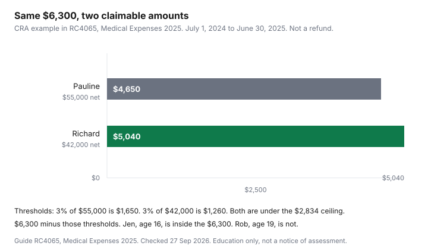

Healthcare · Canada
Which Spouse Should Claim Medical Expenses? Pooling Family Costs and Choosing the Best 12-Month Window
In Canada, one spouse should claim the family’s medical expenses, usually the one with the lower net income, because the claim is reduced by the lesser of 3 percent of that spouse’s net income or $2,834 (2025). You can pick any 12-month period ending in 2025 that was not claimed in 2024. Couples lose the medical expense tax credit by splitting the same receipts across two returns, or by leaving them on the return with the higher net income. Guide RC4065, Medical Expenses 2025, and Income Tax Folio S1-F1-C1 both start from one idea: one spouse claims the family's eligible total, then subtracts the lesser of 3 percent of that spouse's net income or a fixed dollar amount. For the 2025 amounts in the guide, that dollar amount is $2,834. A 2026 indexed ceiling is not printed in the guide or the folio chapter, so it is not guessed. This page is education, not tax advice. The notice of assessment is the document that governs.
Key takeaways
- For 2025 amounts in Guide RC4065, subtract the lesser of 3 percent of the claimer's net income (line 23600) or $2,834. The same $2,834 cap applies on line 33199, measured against the dependant's net income.
- Line 33099 can hold both spouses and children under 18 at the end of the year. Either spouse may claim that pool. Do not claim it twice.
- The period is any 12 months ending in 2025 that nobody claimed in 2024. The guide's example is 1 July 2024 to 30 June 2025.
- A child 18 or older, and other listed dependants, are a separate line 33199 calculation. Their own net income sets the hurdle.
- In the CRA example, the spouse at $42,000 could claim $5,040 and the spouse at $55,000 could claim $4,650 of the same $6,300. If the lower-income spouse has no tax to reduce, compare the other return. The credit is non-refundable.
Why the lower-income spouse often claims: the 3%-of-net-income threshold
The credit is not a percentage of every receipt. Folio paragraph 1.3 says you claim the amount by which eligible expenses exceed the lesser of a fixed amount and 3 percent of your net income.
The fixed amount is indexed. The folio tells you to read it on the CRA indexation chart. Guide RC4065, which is the 2025 guide, prints the figure used on the return: $2,834. Line 33099 is the eligible total minus the lesser of $2,834 and 3 percent of your line 23600.
A lower net income produces a lower 3 percent, until the cap binds. At $40,000, 3 percent is $1,200, and $1,200 is less than $2,834, so the hurdle is $1,200. At $94,500, 3 percent is $2,835, so the lesser amount is $2,834. That last step is arithmetic on the guide's $2,834, labelled as arithmetic. The guide's own couple, worked in full below, never hits the cap: both 3 percent figures are under $2,834. The medical expense tax credit guide is the list of what can enter the total. This page is who claims it, and over which months.
Folio paragraph 1.1 describes the credit as the lowest tax rate percentage multiplied by the two calculated amounts (your household pool, and other dependants). The folio chapter effective 15 August 2025 still says 15 percent for years after 2006. The CRA page "Last year tax rates and income brackets (2025)" prints 14.5 percent as the lowest federal rate for 2025, with a footnote that the rate decreased from 15 percent to 14 percent on 1 July 2025, making the full-year rate 14.5 percent. A Department of Finance note says the rate on most non-refundable credits tracks that lowest rate. Use the rate on the return for the year you file. This guide uses 14.5 percent only when it converts a 2025 claimable amount into a federal credit, and it says so. Provincial line 58689 is a separate form. No provincial rate is printed here.
Pooling both spouses' and minor children's expenses on one return
Line 33099 is the total eligible medical expenses you or your spouse or common-law partner paid for yourself, your spouse or common-law partner, and your or your spouse's children who were under 18 at the end of the tax year. Folio paragraph 1.2 is the same list. If you have, at the same time, both a spouse and a common-law partner, you claim expenses for one of them, not both. Paragraph 1.11 says a receipt in the name of either spouse is acceptable evidence of a medical expense of either, and the amount may be used by either, as they agree.
Pooling means one return holds the sum. It does not mean each spouse claims half. The same dollar cannot be used twice. Paragraph 1.9 says the expenses must not have been used in this credit, the disability supports deduction, or the refundable medical expense supplement for a previous year, and must not have been used by any other taxpayer. A plan reimbursement is generally out, unless it was included in income and not deducted elsewhere. How two workplace plans divide a bill before anything is left to claim is the coordination guide. What never went through a plan is the uninsured fees guide.
Travel kilometres, once they qualify, join this same pool. The distance rules are the medical travel guide. Do not create a second medical claim for the drive.
Choosing any 12-month period ending in the tax year
The guide says you can claim eligible expenses paid in any 12-month period ending in 2025 and not claimed by you or anyone else in 2024. Folio paragraph 1.9 says the same, and it adds a different window if the person died in the year: any 24-month period that includes the date of death.
The guide repeats that 24-month rule for a person who died in 2025, if the expenses were not claimed for any other year. The period does not have to be 1 January to 31 December. A crown in August 2024 and a crown in May 2025 can sit in one window if that window ends in 2025 and the August bill was not already claimed.
The guide's worked couple chooses 1 July 2024 to 30 June 2025. That choice is the CRA's example, not a requirement to use July. Pick the 12 months, ending in the tax year, that put the most unreimbursed eligible costs above the hurdle. Then do not use those receipts again next year. The rest of the household's credits, employment amounts, and donations are the credits checklist. The 12-month medical window is not on that checklist in this detail.
Line 33199: other dependants and how the calculation differs
Line 33199 is not the family pool. It is each other dependant, calculated separately.
The guide lists children 18 or older at the end of the year, or grandchildren, and parents, grandparents, brothers, sisters, uncles, aunts, nephews, or nieces who were residents of Canada at any time in the year and who depended on you for support. Folio paragraph 1.4 is the same family list. The residence requirement does not apply to a child or grandchild. Support, the folio says, is a question of fact: basic necessities such as food, shelter, and clothing, on a regular and consistent basis. If the person had income, you have to be able to show it was not enough for those needs.
The subtraction changes. On line 33199 you subtract the lesser of $2,834 and 3 percent of the dependant's net income, not yours. A dependant with a solid income can wipe out a modest bill. Children under 18 stay on line 33099, which is why their bills can be pooled with the parents even when a parent has the higher income.
When the lower-income spouse has too little tax to use the credit
The folio calls the credit non-refundable. It reduces Part I tax.
If that tax is already zero, a larger claimable amount does not become a cheque. The lower-income spouse can still be the better claimer when they have some tax to reduce and a lower hurdle. They are the worse claimer when their tax is smaller than the credit the hurdle would produce, and the other spouse's tax can absorb a smaller claimable amount. Compare tax payable on both returns. Software that lets you toggle which spouse claims the line is an offer type. This page does not name a product.
There is a separate refundable medical expense supplement for working individuals with low incomes and high medical expenses. The guide says you may be able to claim it if you claimed medical expenses on line 33200 or the disability supports deduction on line 21500, you were resident in Canada throughout 2025, and you were 18 or older at the end of 2025. You must also meet income criteria. That paragraph does not print those income dollars or a supplement maximum. Read line 45200. Do not treat the supplement as an automatic top-up because the non-refundable credit was wasted.
Worked comparison: same expenses, two different claimers
These figures are the guide's example, Richard and Pauline, not a household we observed. Their period is 1 July 2024 to 30 June 2025.
Richard's expenses are $2,500. Pauline's are $2,000. Jen, their 16-year-old daughter, has $1,800. Rob, their 19-year-old son, has $1,300. The four amounts add to $7,600. Jen is under 18, so her $1,800 joins the parents. The line 33099 pool is $6,300. Rob is over 18, so his $1,300 is line 33199, and the guide says the parents must run the calculation using his net income. The guide does not print Rob's net income, so this page does not invent a claimable amount for him.
Pauline's net income is $55,000. Three percent is $1,650, which is under $2,834, so she subtracts $1,650 from $6,300 and could claim $4,650. Richard's net income is $42,000. Three percent is $1,260, so he subtracts $1,260 from $6,300 and could claim $5,040. The guide says it is better, in that case, for Richard to claim the expenses for himself, Pauline, and Jen. If you apply the 2025 lowest federal rate of 14.5 percent from the brackets page, 14.5 percent of $5,040 is $730.80 and 14.5 percent of $4,650 is $674.25. That is federal only, and only if the return has at least that much Part I tax to reduce. It is not a refund quote.
| Claimer | Net income | Threshold | Claimable amount |
|---|---|---|---|
| Pauline | $55,000 | 3% is $1,650, which is under $2,834, so $1,650 | $6,300 minus $1,650 is $4,650 |
| Richard | $42,000 | 3% is $1,260, which is under $2,834, so $1,260 | $6,300 minus $1,260 is $5,040 |
| Either, for Rob on line 33199 | Rob's net income, not printed in the example | Lesser of 3% of Rob's net income or $2,834 | Not calculated here. His expenses are $1,300, kept separate from the $6,300. |

Sources & date stamps
- Canada Revenue Agency, Guide RC4065, Medical Expenses 2025. Line 33099 and line 33199, the $2,834 figure, the 12-month period ending in 2025, the 24-month rule on death, and the Richard and Pauline example: $6,300 pooled, $4,650 versus $5,040. Checked 27 Sep 2026.
- Canada Revenue Agency, Income Tax Folio S1-F1-C1, Medical Expense Tax Credit, chapter effective 15 Aug 2025. Who can be pooled, the non-refundable credit, receipts in either spouse's name, and the separate dependant calculation. The chapter's "15 percent for years after 2006" is not used as the 2025 rate.
- Canada Revenue Agency, Last year tax rates and income brackets (2025). Lowest federal rate 14.5 percent, footnote on the 1 July 2025 change. Used only to convert the example's claimable amounts. Checked 27 Sep 2026.
- No 2026 medical-expense dollar ceiling was printed on the pages checked. It is omitted.
Frequently asked questions
Should the lower-income spouse claim medical expenses?
Often, yes, because the hurdle is 3 percent of the claimer's net income, capped by a dollar amount. Guide RC4065, Medical Expenses 2025, prints that cap as $2,834. In the guide's example, Richard at $42,000 of net income could claim $5,040 of a shared $6,300, and Pauline at $55,000 could claim $4,650. The guide says it is better, in that case, for Richard to claim. A lower hurdle is not the whole decision. The credit is non-refundable, so a spouse with little tax owing may not use the larger claimable amount. Compare both returns. This is education, not a filing instruction.
Can we combine both spouses' medical expenses?
Yes, on one return, for line 33099. That line is the total eligible expenses you or your spouse or common-law partner paid for either of you and for your or your spouse's children who were under 18 at the end of the year. In the CRA example, Richard's $2,500, Pauline's $2,000, and their 16-year-old daughter's $1,800 combine to $6,300. Either spouse can claim that total. A receipt in either name is acceptable evidence for either spouse, as they agree. Do not also claim the same dollars on the other return.
What 12-month period can I use?
Guide RC4065 says you can claim eligible medical expenses paid in any 12-month period ending in 2025 that were not claimed by you or anyone else in 2024. The guide's example uses 1 July 2024 to 30 June 2025. The period does not have to be the calendar year. If the person the expenses were for died in 2025, the guide allows a 24-month period that includes the date of death, if the expenses were not claimed for any other year. Do not reuse a bill that was already claimed.
Can I claim my adult child's medical costs?
An adult child's expenses are not folded into the parents' line 33099 total. They go on line 33199, and you calculate each dependant separately. You subtract the lesser of $2,834 or 3 percent of that dependant's net income, not 3 percent of yours. In the CRA example, Rob is 19 and his $1,300 stays off the parents' $6,300. If 3 percent of his net income is more than $1,300, the claimable amount on that line is zero. Other dependants the guide lists, such as a parent or a sibling who lived in Canada at any time in the year and depended on you for support, use the same separate calculation.
What if my spouse has no tax payable?
The medical expense tax credit is non-refundable. Folio S1-F1-C1 says it reduces Part I tax. It does not, by itself, pay out the unused amount as a refund. If the lower-income spouse's federal tax is already zero, the larger claimable amount may do nothing on that return. Run the same expenses on the other spouse's return and compare tax payable, not just the claimable line. A separate refundable medical expense supplement can apply to a working person with a low income who claimed medical expenses or the disability supports deduction and meets the income test on line 45200. The guide does not print a supplement dollar in that paragraph, so none is copied.
Researched and drafted with AI assistance and fact-checked against official Canadian sources. How we create content.
Disclosure: Tax software is an offer type. Saving Optimizer may later add partner links. We do not currently claim a software partnership. Education only — not tax advice. No named software picks.